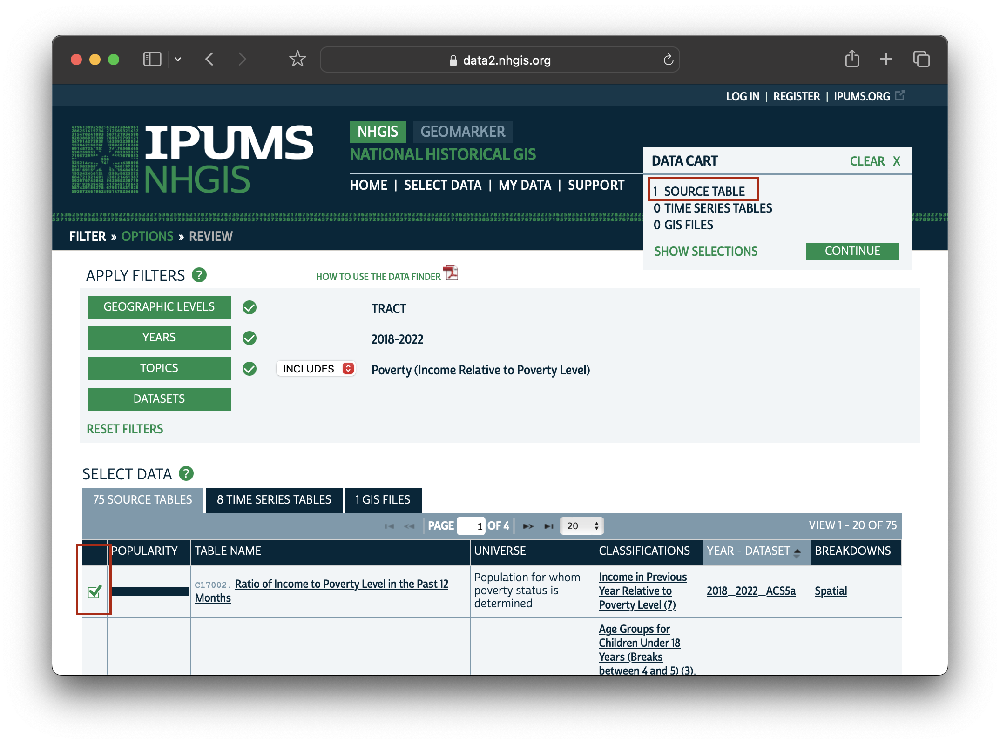
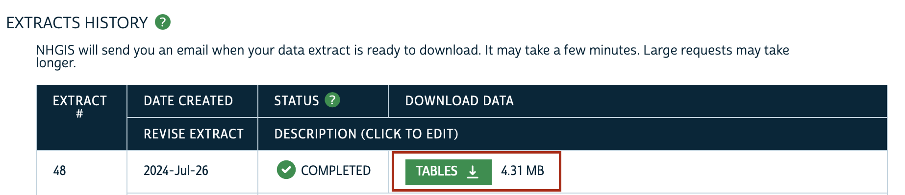
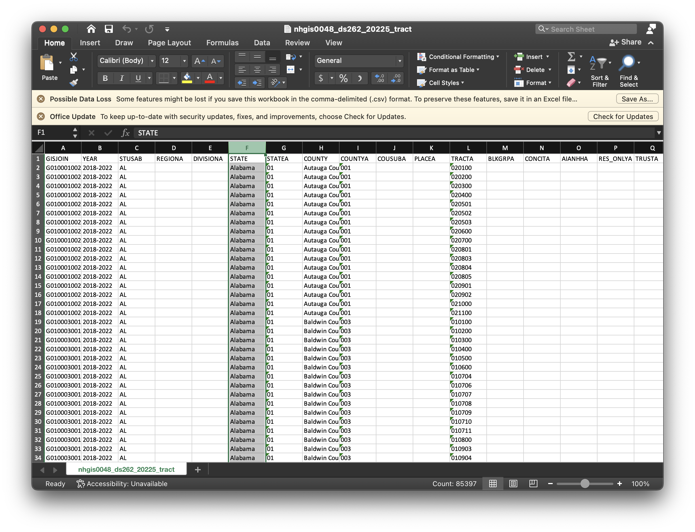
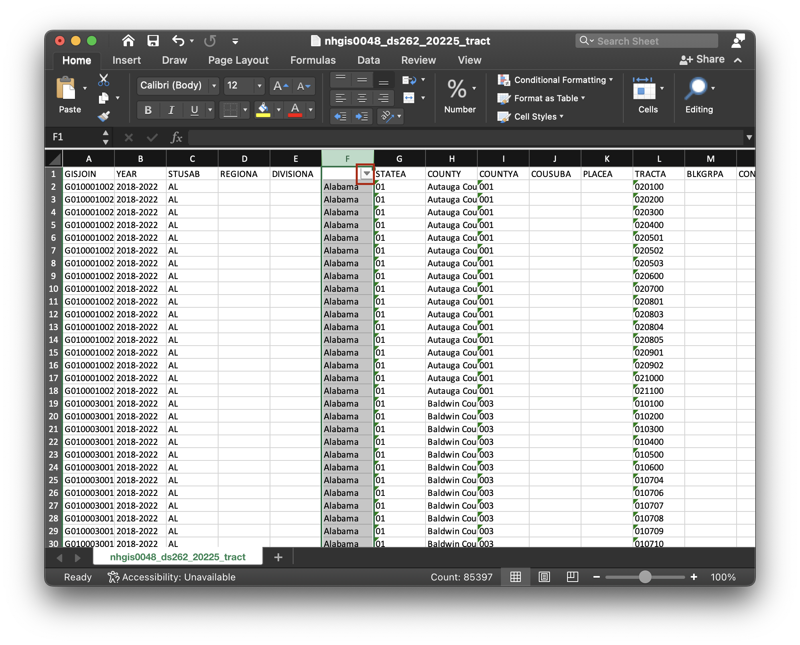
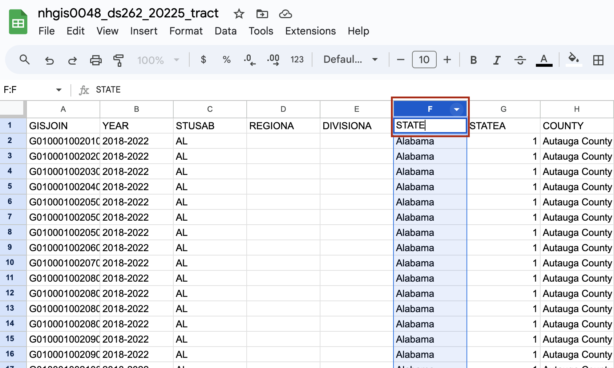
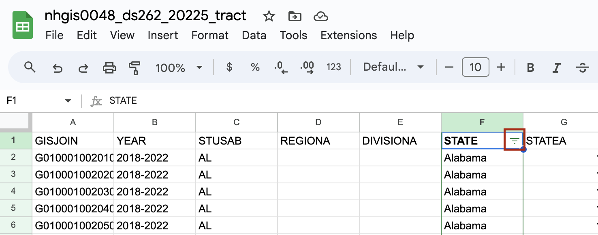

How to Download Poverty Rate Data by Census Tract for GIS
In order to map poverty rate per census tract, you must first perform some steps to prepare the data. In this tutorial, we will practice:
- Downloading high-quality data
- Cleaning the data to prepare it for mapping
Downloading the data
-
Visit NHGIS.org . Create a free academic use account, if you haven’t already, and log in.
-
From the NHGIS.org home screen, choose
START HERE: Get Datain the middle of the page, orSELECT DATAin the navigation bar menu at the top of the page.
-
Click
TOPICS.
-
Scroll down and choose
Poverty (Income Relative to Poverty Level)from theINCOMEheading. Check off this item using the check-box furthest to the left.
-
Click
SUBMIT. -
Under
YEARSselect whichever American Community Survey 5-year range is most applicable to your project.
-
Under
GEOGRAPHIC LEVELSchooseCENSUS TRACT
Why are we using census tracts?
Censuses are collected at the individual level. When you fill out a census form, you fill it out for yourself, or for your household. Survey results for each household are generally not released to the public, as a way of protecting people's privacy. Instead, individual results are aggregated to specific units of geography. These units have been pre-drawn by the United States Census Bureau. You can learn more about the hierarchical census geographies on census.gov.
Census tracts are a popular unit for geospatial analysis, because counties, the level above, can be too vague to show spatial specificity, whereas more granual geographies, such as block groups or blocks can have a higher likelihood for sampling errors.
-
Select the first result, “Ratio of Income to Poverty Level in the Past 12 Months” by clicking the green check-box to the left of the result. You will see the source table reflected in your your
DATA CART: 1 SOURCE TABLE.  -
From your
DATA CARTchooseCONTINUEandCONTINUEandSUBMITto begin the download. If you are not logged in you will be prompted to do so now. -
Wait a moment or so for your extract to finish processing, and then download it by selecting
TABLES. 
Preparing the data for mapping
Editing the scale of the data
We have downloaded rows for every census tract in the entire United States. This is not ideal because we are planning to upload this data to visualization software. Reducing our data at the outset will save us time and space.
The data cleaning portion of this tutorial is written for three spreadsheet software options: Microsoft Excel, an open (free) desktop spredsheet tool called LibreOffice , or Google Sheets.
Excel instructions
-
Open the
.CSVin Microsoft Excel. If you are prompted to remove leading zeroes, chooseDon't Convert. -
Highlight the column titled
STATE.  -
From the menu ribbon choose
Sort and Filter. -
Choose
Filter. Click the drop-down arrow at the top of the column titledSTATE.  -
Uncheck
Select All. -
Check off
New Yorkand close the filter window by clicking the small red x in the upper left-hand corner. -
CTRL + Aon a Windows,Command + Aon a Mac, or from the menuEdit→Select Allto highlight all the records. -
Copy the records.
CTRL + C;Command + C;Edit→Copy. -
Open a new sheet
File→New. -
Paste the records into the new sheet. Save this sheet with your other datasets as
new-york-poverty-rate.csv
Do not use .XLSX
Make sure to always save your spreadsheet data for mapping in .CSV format. .CSV is an open-data format, and has a higher likelihood of being interoperable with most GIS software.LibreOffice instructions
-
Open the dataset in LibreOffice.
-
Click the
AutoFilterbutton in the menu ribbon.
-
This will add drop-down arrows to the tops of the column headers. Choose the drop-down arrow next to the column titled
STATE. -
Uncheck
All. Scroll down and check offNew York. -
CTRL + Aon a Windows,Command + Aon a Mac, or from the menuEditthenSelect Allto highlight all the records. -
Copy the records.
CTRL + C;Command + C;Edit,Copy. -
Open a new sheet
File→New→Spreadsheet. -
Paste the records into the new sheet. Save this sheet with your other datasets as
new-york-poverty-rate.csv
Google Sheets instructions
-
Type
sheets.newinto a browser to open a new Google sheet. -
Choose
File→Open→Upload→Browseto bring in the census data.csv. -
For the
STATEcolumn, click or hover over the column header until a drop-down arrow appears.  -
Click the drop-down arrow to open a column menu.
-
Choose
Create a Filter. -
Now, next to the header name for the column, there will be a button with three horizontal lines. 
-
Click the button next to the header name with the horizontal lines to open a filtering wizard.
-
Under
Filter by Values, next toSelect All, click the text that saysClear. -
Scroll down to where it says
New Yorkand clickNew York. SelectOK. -
Select all by clicking the cell directly under the formula bar.
 .
. -
Copy the values.
-
Create a new sheet.
-
Paste the values into the new sheet.
Scaling data more granularly by using the table
We have reduced our records to only represent census tracts in New York State. If we wanted to further scale down our data, we could filter the records by a particular county. For instance, we could include only the counties associated with New York City.
Creating an average poverty rate column
-
From the downloaded folder, open the codebook. The file should read something like
nhgis00xx_ds262_20225_tract_codebook.txt. -
This data is structured as numerous columns each showing a population count for a different poverty level segment.

AMZME002is the number of people with income under 0.50 of the poverty level.AMZME003is the number of people with income between 0.50 and 0.99 of the poverty level.AMZME001is the total population for whom poverty status is determined.
Poverty Rate Equation
Poverty Rate= AMZME002 + AMZME003 / AMZME001 x 100-
Create a new column called
POVERTY_RATE. -
In the second cell of the new column, enter the equation
= IFERROR((AR2 + AS2)/AQ2 * 100, 0)
‘IFERROR’ catches null values in the source census data. We ask the function to return 0 instead of an error message if the function can’t carry out. -
Fill down to complete the column by double-clicking the plus sign on the cell with the formula.
-
File→Save. Make sure to save as a.CSV.
You now have a dataset you can use to map poverty rate. Use the GEOID column to join this data with a census tract shapefile, and use the newly computed POVERTY_RATE field to power the visualization.
Follow the next tutorial in the workshop to learn how to create a map from this data.